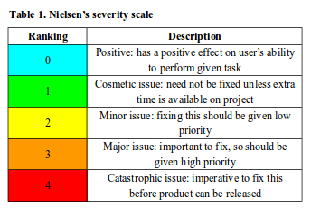
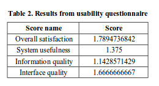

What follows is an overview of the project - or greater detail on the project, please download the full paper.
We worked with Infinity Culinary Training, a chef school in Cape Town, to understand their needs and design a system that addressed those needs. In our initial interactions with members of the school, we discovered that the administration staff experienced challenges with their current system of storing and retrieving information about past and current students. The key challenge with their spreadsheet-organised system was that it was becoming increasingly difficult to manage with a growing number of graduates. While there are numerous prominent commercial solutions available, they present implementation barriers such as costs, customisation, graphical user interface (GUI) and technical support. Infinity Culinary Training sought a solution that would
We employed co-design methods in an iterative development methodology to design and evaluate a data management system. In the first iteration, we designed and evaluated an application to compile student information and automatically generate a curriculum vitae (CV). The aim of this application was to relieve users of the manual task of creating CVs for students to send to prospective employers. Results from this phase revealed that more focus had to be placed on the data management tool because it was of greater importance to the school and had more features to be implemented. In order to allocate our work properly, we then decided to limit the scope of our project by excluding the CV generator. Instead, we divided the data tool into a data management component and a data visualisation component. In the second iteration, we performed usability tests on the visualisation tool, which received positive feedback from users. In the last iteration, we developed and evaluated the application for adding students to the system, in addition to the visualisation tool. The final deliverable of this project was a usable system that enables the admin of the chef school to store student information and view statistics about students.
We used an iterative human centered design (HCD) methodology to design the system. The HCD component of our approach was focused on techniques to design a useful and usable system, and involve users early in the design process; while the iteration component was concerned with designing rapid prototypes to cater for evolving user needs. An iterative HCD approach was suitable for our project because collaborating with members of the chef school from the beginning to create prototypes enabled us to reflect their requirements in the design and avoid unexpected issues in the final design of the system.
The design process was separated into two phases, with the first phase dedicated to data gathering and the second phase design.
In the first phase of the project, we used various data gathering techniques to help identify user needs and establish requirements. We first conducted focus groups and semi-structured interviews with the executive director, admin staff and lecturers to introduce the project and learn about the school. From this interaction, we were able to create an initial map of the stakeholders and their interests in the project. We then conducted more interviews and one-on-one meetings with staff, graduates and students; and observed a lesson. From these engagements, we could identify challenges faced by stakeholders .
The second phase was separated into three iterations of ideating, prototyping, and testing. In ideation, we brainstormed and generated ideas; while prototyping involved creating prototypes to model our ideas; and testing was concerned with evaluating the prototypes to identify issues and improve the next iteration. Throughout the design process we adopted empathic design techniques to interact with users and put ourselves in their shoes to better understand their needs.
In the first iteration, we created low-fidelity paper prototypes; which were followed by medium-fidelity prototypes created in Microsoft Powerpoint; and finally high-fidelity prototypes implemented in Python using the Django framework. We started with paper prototypes because they introduce users to rough versions of the idea and draw focus to the behaviour of the interface. According to Rettig (1994), paper prototypes enable designers to try many ideas, get results early in development and make changes. The medium-fidelity prototypes had limited functionality, which enabled users to visualise the interactions and navigation possibilities of the system. The high-fidelity prototype then conveyed the feel and functionality of the final system, enabling us to evaluate overall usability and user satisfaction.
We used various qualitative and quantitative methods to test the usability of the system, namely cognitive walkthroughs, questionnaires, focus groups, and heuristic evaluation. Cognitive walkthroughs were aimed at examining how users interacted with the interface; focus groups and questionnaires enabled us to validate the assumptions we made during the walkthrough and allowed users to share their experiences; and heuristic evaluation enabled us to assess usability of the final prototype against a selected criteria.
In total, we recruited ten subjects to participate in evaluations. We recruited four participants from the chef school to participate in cognitive walkthroughs, questionnaires and post-test focus groups. We also selected six students from the Computer Science honours class at UCT to participate in a heuristic evaluation of the software prototype. For the latter, we recruited participants who were familiar with HCI and design principles.
The first part of evaluation included a cognitive walkthrough of the prototype, in which one team member would briefly describe the system and process; another one providing the user with tasks to carry out; and the final member recording responses. For the first iteration, the user was expected to create a CV for a specific student. For the second iteration, the user was expected to view statistics for all students, filter by year, and filter by class. The final iteration included tasks to add students to the database and view statistics.
The cognitive walkthroughs were followed by a focus group with participants to discuss their perceptions about the system, how they engaged with it and their experiences during the walkthrough. For the final iteration, each participant was also given a questionnaire to complete,which was designed to gauge user satisfaction with the interfaces. Participants were given the IBM Post-Study System Usability Questionnaire (PSSUQ). Responses from the PSSUQ were then analysed to calculate scores for overall satisfaction, system usefulness, information quality and interface quality.
To conduct a heuristic evaluation of the final prototype, we first introduced the system and main user tasks, which were ‘Add New Student’ and ‘View Statistics’. Each participant was required to perform user tasks and evaluate the system according to Jakob Nielsen's Ten Usability Heuristics. We selected Nielsen's heuristics because they are widely-used in the user experience community and provide an objective criteria for identifying usability problems. Evaluators were asked to firstly identify issues individually for an hour then rank the severity of all issues identified as a group using Nielsen’s rating scale (Table 1). We then discussed the results with all evaluators and brainstormed solutions.
Table 2 below shows the results of the usability questionnaire. Please refer to the full paper for comprehensive results
We investigated the usability of a data management system designed collaboratively with members of a chef school. We evaluated the system using a mixed methods approach to establish how users would perceive and interact with the system, and which aspects of the system were most important to users. Our results show favourable responses concerning overall satisfaction, system usefulness, information quality and interface quality. We identified that users wanted a system that will enable them to save students to the database, view overall statistics of the school, and filter statistics by year and class. We have shown how co-design methods can be used to engage and co-create with users from a chef school. We consider it important for researchers to identify the knowledge each user contributes to the design and indicate where and how users will provide input. We believe that it is essential for all users with a significant influence and impact in the project to be involved in key design decisions. The challenge is for researchers to find appropriate means of engaging with users who are unavailable to actively participate in activities. In timeboxed projects, it is important for researchers to set realistic goals and ensure that users are informed about what can and cannot be done in the set timelines. The next step for the project is to implement the feedback from the final iteration and integrate all components of the system before the final system is shown to users.